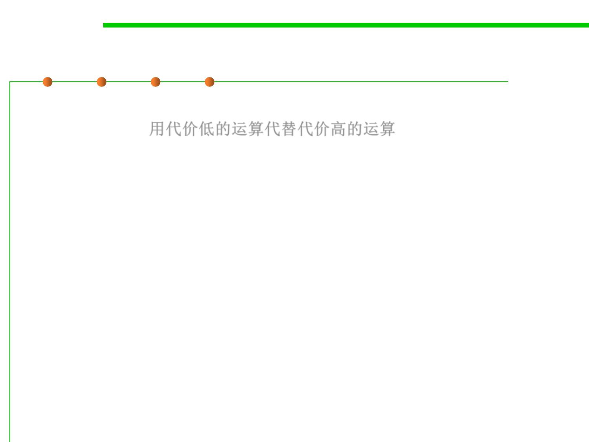

8.3 Code Tuning for Performance Optimization
Use strength reduction—削弱运算强度
▪ strength reduction means replacing an expensive operation with a
cheaper one. 用代价低的运算代替代价高的运算
▪ Here are some possible substitutions:
– Replace multiplication with addition.
– Replace exponentiation with multiplication.
– Replace trigonometric routines with their trigonometric identities.
– Replace longlong integers with longs or ints (but watch for performance
issues associated with using native-length vs. non-native–length integers)
– Replace floating-point numbers with fixed-point numbers or integers.
– Replace double-precision floating points with single-precision numbers.
– Replace integer multiplication-by-two and division-by-two with shift
operations.